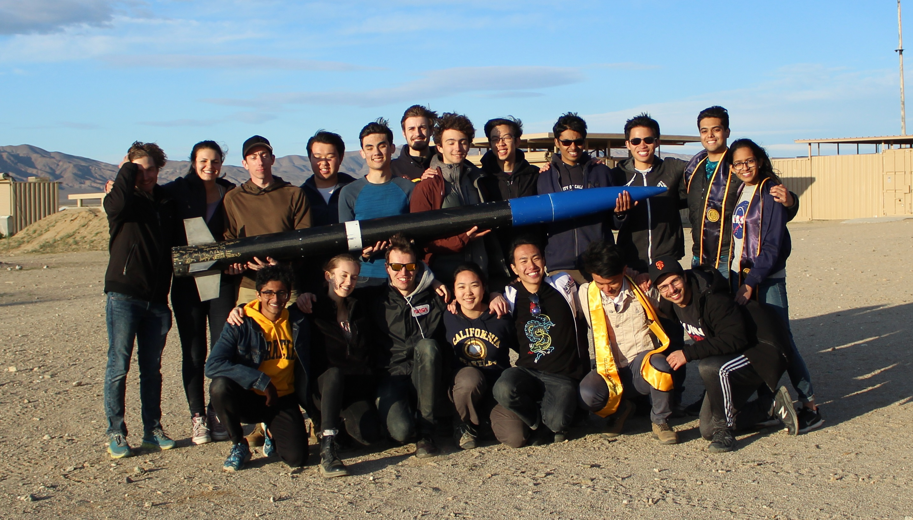
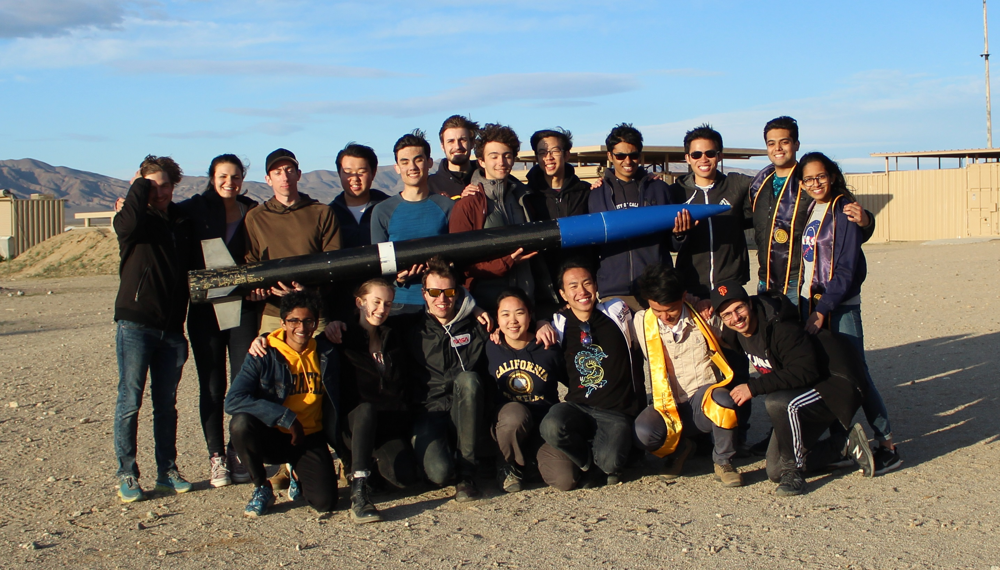
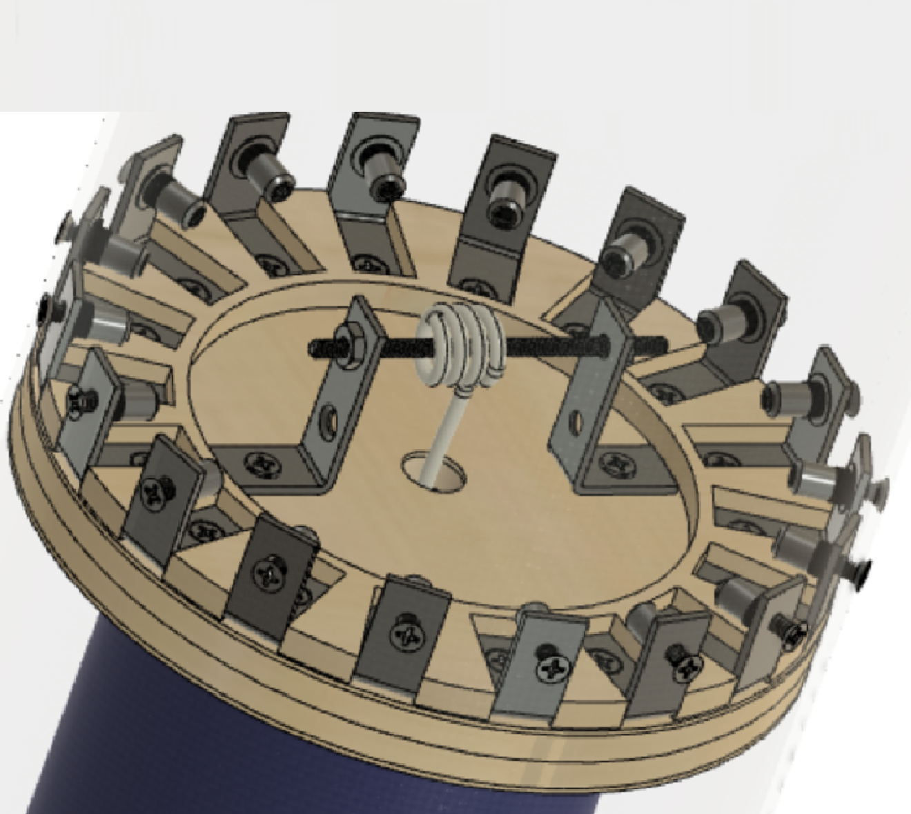
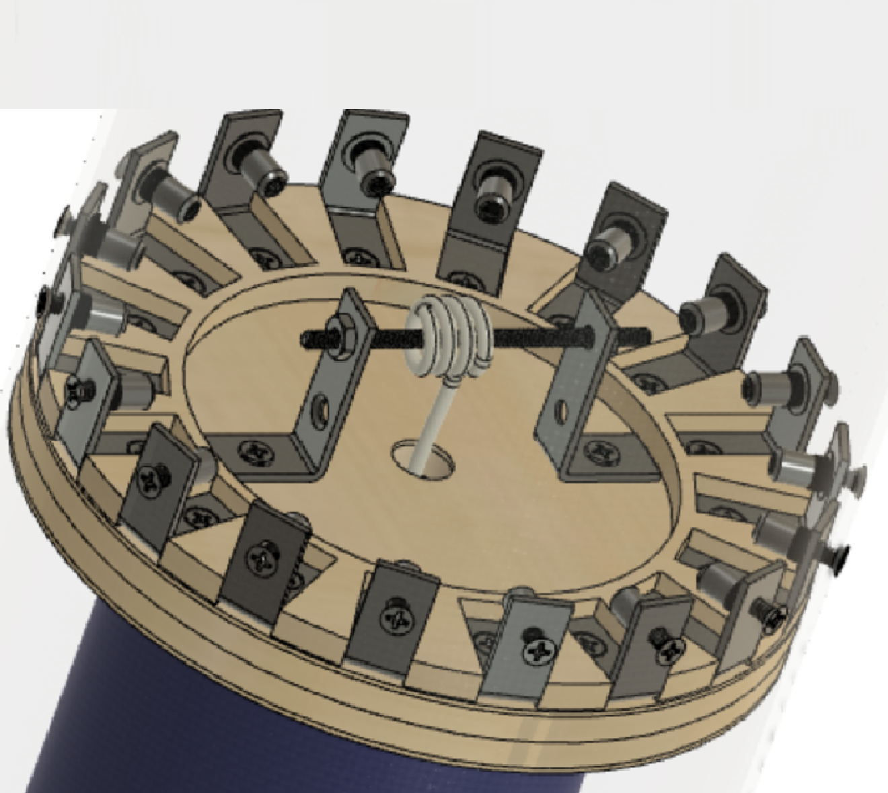

The SEB Story
Space Enterprise at Berkeley is UC Berkeley's space-shot rocketry team, and personally, the highlight of my college experience. Founded by a group of ambitious students in 2016, two years before I began studying at Berkeley, SEB has always had the goal of being the first collegiate team to build and fly a liquid rocket past the 100-km Karman line and into what is officially considered outer space. In doing so, we'd be able to show the world that spaceflight is accessible, well within the reach of even a group of determined college students on a tight budget. Besides, why not shoot high?
But, as the co-founders of SEB soon found out, starting out with a spaceshot wasn't the best idea. All the passion in the world couldn't keep up with the lack of practical experience, and the team stumbled through unfruitful design phases during its first few years. Although the spaceshot ambitions were still there, the team began to get our feet wet with smaller solid-fueled rockets. Our first "low-altitude demonstrator", LAD-1, was constructed in my freshman fall (2018). The rocket stood eight feet tall and measured just over six inches in diameter. Its most distinguishing feature is an all-composite monocoque airframe, handmade by the team. Using composites allowed us to greatly simplify the airframe design by transferring loads directly through the fuselage itself, eliminating the need for axial longerons and internal ribs. To construct the airframe tubes, we carefully laid up sheets of bidirectional carbon fiber and fiberglass fabric on a cardboard mandrel protected by a mylar sheath, applying layers of epoxy along the way. For the nosecone, we manufactured a wooden mold using a Shopbot CNC router, laying up on the inside of the mold, and attaching the two halves together. Finally, the whole airframe was meticulously sanded, finished, and painted for flight.
LAD-1 launched on an experimental solid motor generously donated to the team by a mentor, reaching 6 000 feet and looking good doing so. However, recovery system deployment woes brought her down hard. The airframe (and our egos) sustained some minor damage, but we turned around quickly, building and flying LAD-2, a smaller four-inch-diameter rocket the next spring. LAD-2 was equipped with a redesigned parachute deployment system and was a testbed for more experimentation with composites. Among my favorite details on the rocket are the carbon fiber fillets holding the fins to the aft airframe, made using a wet slurry of chopped fiber mixed with epoxy resin (detail below). The LAD projects (including the never-flown LAD-3, which was a larger airframe made to interface with the LAD-2 nosecone setion) were my first hands-on introdution to the world of composites, and I quickly discovered the beauty of these materials. For a high-powered rocket at our scale, composites offer unparalleled stiffness and strength, as well as manufacturability. There was no sheet-metal bending, no weld-induced regions of lost heat treatment, and most importantly, no machine-shop cost.

LAD-4
As the team began to approach the design phase of our first liquid-fueled rocket, Eureka-1, we chose to build a fourth LAD airframe, LAD-4, that would specifically be a testbed for the dual-deployment parachute system that the Eureka fleet would require. Compared to the earlier LAD flights, which were designed to be experimental, fail-forward vehicles, we wanted LAD-4 to be robust, reuseable, and as optimized for speed and altitude as possible. In the spring of 2020, I led the LAD-4 project, and together we designed, planned, and built the rocket within the span of seven weeks (including some long, long nights) - the fastest ground-up build time ever for SEB. Seven and a half feet tall with a nominal outer diameter of 6.5 inches, LAD-4 was primarily based on the composite-based design of predecessors and also featured a carbon-fiber reinforced polymer aerostructure. To drive down development time and BOM cost, internal hardware was made from laser-cut wood plates reinforced with small pieces of composites where necessary.

Determining that just four layers of material were sufficient to survive the forces of flight and prevent
buckling, we again laid-up the airframe tubes and nosecone by hand, followed by a good deal of sanding and
polishing before we cut the tubes to their final length. We swapped in removable metal fins for the previous
wood-core-composite design and redesigned the fin-mounting system; along with other parts of LAD-4, this was
an intentional choice in the spirit of reusability. The airframe is designed to fly upwards of five times,
with minimal turnaround time required between each flight, in order to rigorously validate the recovery
system that would bring Eureka-1 home.
On a cold, blustery Saturday in March, LAD-4 successfully
flew to 11 193 feet AGL and reached a top speed of Mach 1.2, breaking the UC Berkeley record that had been
set by LAD-1 two years prior. Below are some pictures from launch day; on the left, we are lining up the
rail buttons with the slotted launch rail, and on the right the team is posing with the recovered rocket at
the end of a long yet rewarding day.
 

Here are some of my favorite features of LAD-4:
- (Below, left) A completely modular fin attachment system, a departure from previous designs. As part of the goal of flight reusability, modularity allows us to replace one or more damaged fins at a moment's notice. Eighteen laser-cut rings are fixed to the outer motor housing, providing channels for each fin to slide into; a tab at the leading edge of the fin mates with a slot cut nine inches into the airframe. The fin is fixed to the airframe using brackets, and curved carbon-fiber "band aids" seal the aft airframe after installation.
- (Below, right) A robust thrust plate, featuring a 1/2"-wood-core composite structure that withstands the engine's thrust force, transferring it through to the airframe. Rivnuts (threaded inserts) were used to hold the thrust plate in place, and the assembly can be tightened with ease from outside the airframe. The thrust plate also provides a hard point for motor retention after the burn is complete.
- (Not pictured) The dual-deployment pyrotechnic recovery system that would fly onboard Eureka-1. A drogue parachute is deployed at apogee, restoring a nose-up attitude and slowing the airframe down, while the main parachute is held in place by a carabiner system, released at the command of onboard avionics when the vehicle reaches a certain height above ground.
 

After the flight, I led the team in putting together a complete technical report, which detailed the design, fabrication, testing, and first flight of LAD-4. (The two CAD screenshots above are from the report pages.) Hopefully, this document will serve as a resource for future SEB members who will fly the airframe again, or borrow elements from its design on future LAD vehicles. The full text is available here [PDF].
Onwards and Upwards
With the maiden flight of LAD-4 in the books, we have turned our attention towards the propulsion system of Eureka-1, which will fly on our first liquid-fuel (LOX/Methane) engine, Lightbulb. The engine and feed system of Eureka-1 are currently undergoing qualification testing to gather empirical data and improve system functionality.
In the summer of 2021, our first attempts at static firing the Lightbulb engine resulted in two spectacular “rapid unscheduled disassembly” events:
Although it was disappointing to witness two uncontained engine failures, the team showed incredible resilience in rebuilding the system. The first major change we made was to simplify the arrangement of our test stand: instead of a flight-like, vertical configuration, we built a four-wheeled Cart to house the pressurant and propellant vessels, feed system, and engine assembly in a compact form. This greatly simplified operations both during system development and in subsequent static fire attempts. The Cart is equipped with a steel sandwich-panel blast shield to protect the pressure vessels from shrapnel in the case of another explosion.
In addition to a host of physical changes, the team implemented a thorough and rigorous development, qualification, and acceptance testing scheme to ensure that we were well-prepared for the next static fire. In doing so, we caught many mistakes and oversights that had been entirely preventable, yet overlooked. With this new testing regimen, we were able to fully characterize the behavior of our system under several conditions, and validate individual changes and upgrades to the Cart (new igniter fixturing methods and new fill-level sensing methods in particular) before and during their integration.
In October 2021, the Lightbulb engine was successfully static fired for the first time, producing a peak 525 lbf of thrust during two 3-second burns, for a combustion efficiency of 90% the designed value. The success of this static fire makes SEB one of the few all-collegiate rocketry teams to ever fire a liquid engine! In addition to thrust data, we successfully gathered thermal, structural, and pressure data throughout our system.
In November 2021, we static fired again for the third and fourth times, reaching a burn time of 7 seconds in the latest test. This set of testing successfully validated changes to main-valve actuation timing and igniter fixturing that led to fracturing in the nozzle observed during the October tests. Next w we are looking towards a full-duration static fire test, scheduled for early 2022. Along with future LAD flights, a successful full-duration burn will enable us to begin integration of the Eureka-1 flight vehicle towards launch.